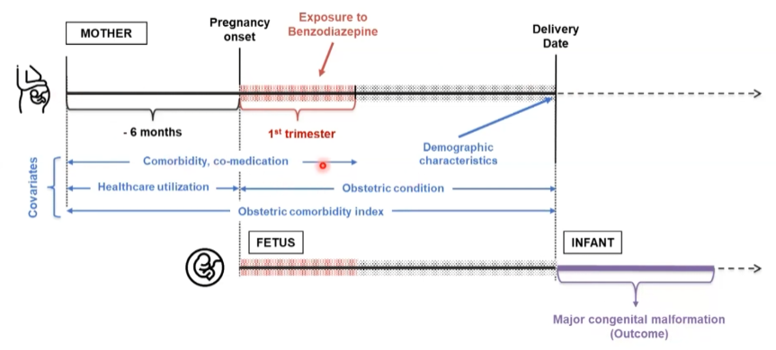
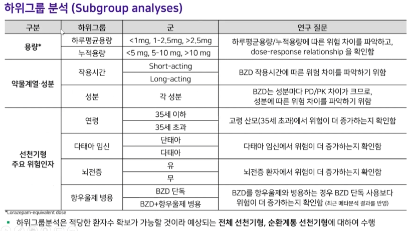
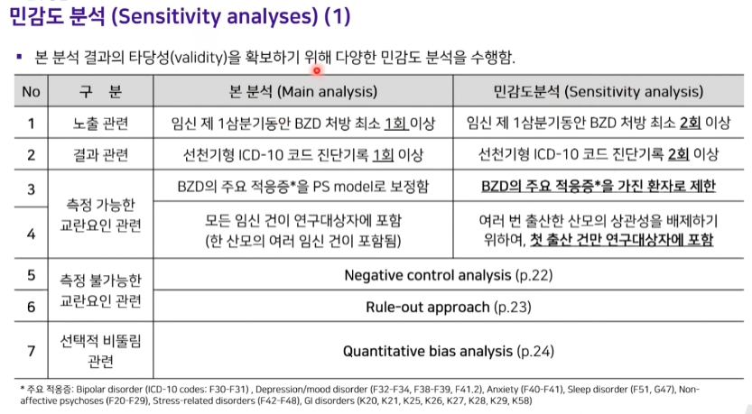
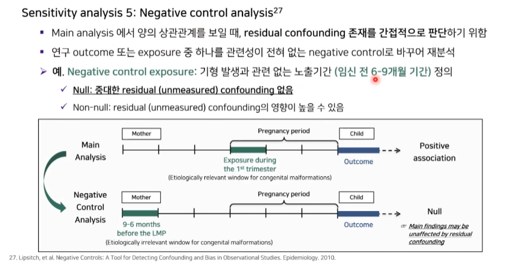
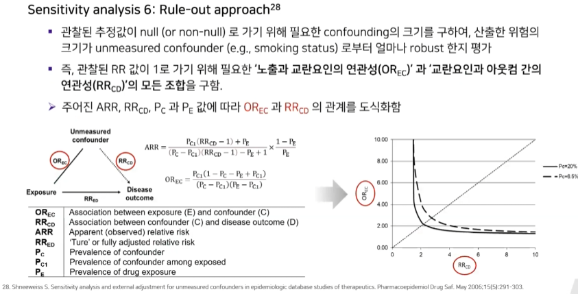
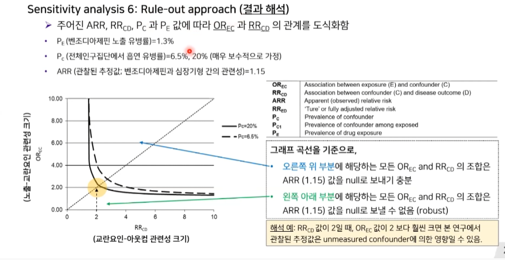
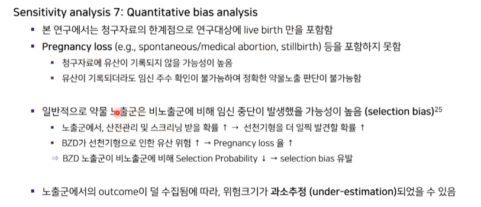
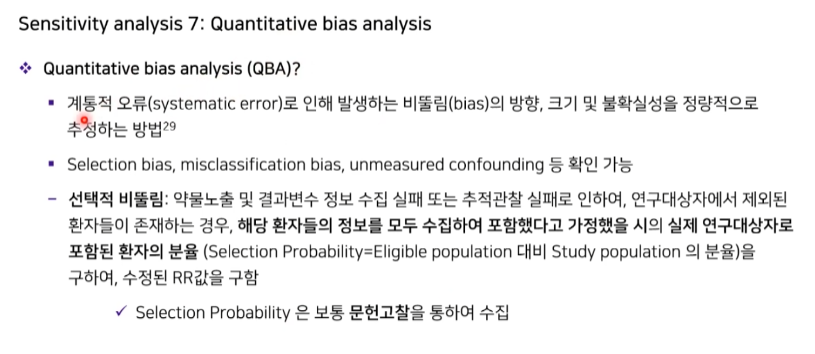
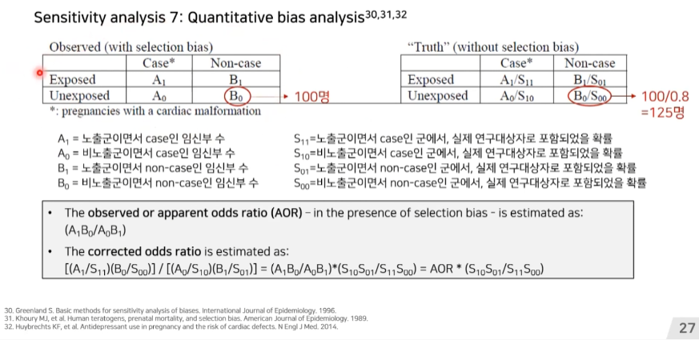

Chapter 4 etc.
4.1 Survival analysis
Cox regression model
We covered using log-rank tests and Cox regression to examine associations between covariates of interest and survival outcomes. But these analyses rely on the covariate being measured at baseline, that is, before follow-up time for the event begins. What happens if you are interested in a covariate that is measured after follow-up time begins?
Landmark analysis
Time-dependent covariates
Competing risk regression with Gray’s test
Assessing proportional hazards
4.1.1 Deep learning for survival analysis

The first is based on further development of the baseline Cox proportional hazards model: DeepSurv (section 5.1), Cox-nnet (extension of CoxPH on specific genetics datasets and regularizations).
- DeepSurv는 Faraggi-Simon 네트워크와 유사한 다층 퍼셉트론으로 Cox 비례위험 모델의 딥러닝 일반화를 구현한 것으로, 비선형적 비례위험 모델이다. DeepSurv는 공변량의 사전 선택이 필요하지 않지만 적응적으로 학습하므로 기존 Cox 회귀에 비해 이점이 있다.
- Data에서 non-linear한 관계도 살펴보기 위해서 DeepSurv라는 모델을 제안했으며, DeepSurv는 risk function에 DNN을 사용하고 cox-partial likelihood의 변형을 주어 학습만 했는데 훨씬 좋은 성능을 보였다.
- 다만, DeepSurv가 non-linear한 관계를 살펴보기 때문에 CoxPH에 비해 큰 단점이 있음, 바로 각 변수들이 미치는 영향을 직접적으로 볼 수 없어 설명할 수가 없다는 점이다.
As an alternative approach, fully parametric survival models which use RNN to sequentially predict a distribution over the time to the next event: RNN-SURV, Weibull Time-To-Event RNN etc.
On the other hand, there are some new advanced deep learning neural networks, such as DeepHit, developed to also process the survival data with competing risks (section 5.2).
https://humboldt-wi.github.io/blog/research/information_systems_1920/group2_survivalanalysis/
4.3 ATC/DDD
The Anatomical Therapeutic Chemical (ATC) classification system and the Defined Daily Dose (DDD) as a measuring unit have become the gold standard for international drug utilization monitoring and research.
The ATC/DDD system is a tool for exchanging and comparing data on drug use at international, national or local levels.
DDD는 성인을 대상으로 주요 적응증에 대해 사용된 의약품에 대하여가정된 일일 평균 유지 용량을 말한다.
https://apps.who.int/iris/bitstream/handle/10665/42627/924156234X_kor.pdf?sequence=17&isAllowed=y
4.4 Meditation analysis
- 매개효과분석
- 첫 번째 변수 X가 두 번째 변수 M에 영향을 미치고, 이어서 차례로 그 변수가 세 번째 변수 Y에 영향을 미치는 연쇄적인 영향 관계를 검정한다.
- 두 변수 X와 Y 사이에 일련의 영향관계가 어떠한 과정을 거쳐 발생하는 지 설명하는 변수 M을 매개변수(mediator)라고 한다.
- 매개효과는 간접효과라고도 한다.
- c: 총효과, c’: 직접효과, ab: 간접효과(매개효과)
- c = c’ + ab (총효과 = 직접효과 + 간접효과)
- 바론 & 케니 매개효과분석
- 간접효과 = 독립변수와 매개변수 간의 회귀계수 * 매개변수와 종속변수 간의 회귀계수
- 간접효과의 통계적 유의성 검정하는 방법 2가지
- 소벨(Sobel)검정
- bootsprapping 검정
- Total Effect: 총효과
- ADE: 직접효과
- ACME: 매개효과(간접효과) = 총효과 - 직접효과
- https://www.ncbi.nlm.nih.gov/pmc/articles/PMC7853644/
- https://towardsdatascience.com/doing-and-reporting-your-first-mediation-analysis-in-r-2fe423b92171
- https://velog.io/@revudn46/%ED%9A%8C%EA%B7%80%EB%B6%84%EC%84%9D-%EB%A7%A4%EA%B0%9C%ED%9A%A8%EA%B3%BC%EB%B6%84%EC%84%9Dmediation-effect-analysis
- 참고문헌: Mediation effect of herpes zoster derived by statin use on cardiovascular disease risk
4.5 약물역학(Pharmacoepidemiology)이란?
인구집단에서 약물의 사용으로 인하여 발생하는 이롭거나 해로운 결과의 빈도를 파악하고 특정 약물복용과 질병발생 간의 관련성을 분석하는 데 역학적인 지식과 연구방법론을 적용하는 학문
약물역학의 필요성
- 시판 전 임상시험의 한계점 (“Six Tools”)
- Two Few (study subjects)
- Too Simple (design)
- Too Median-aged (population)
- Too Brief (period of observation time)
- Too Narrow (range of exposure)
- Too Indirect (surrogate vs desired endpoint)
- Pharmacosurveillance
- 시판 전 임상시험의 한계점 (“Six Tools”)
Real-World data (RWD, 실사용데이터): 전통적인 임상연구가 아닌 다양한 자료원으로부터 수집되는 환자 건강상태 또는 보건의료 전달체계와 관련된 데이터
Real-World Evidence (RWE, 실사용증거): RWD의 분석을 통해 얻은 의료제품의 잠재적인 유익성과 위해성 및 사용법에 대한 임상 근거
약물역학 예제



측정 불가능한 교란요인 관련
- Negative control analysis

- Rule-out approach


- Negative control analysis
선택적 비뚤림 관련
Quantitative bias analysis



https://cran.r-project.org/web/packages/episensr/vignettes/episensr.html